Beyond REST: .NET Apps That Talk to Hardware
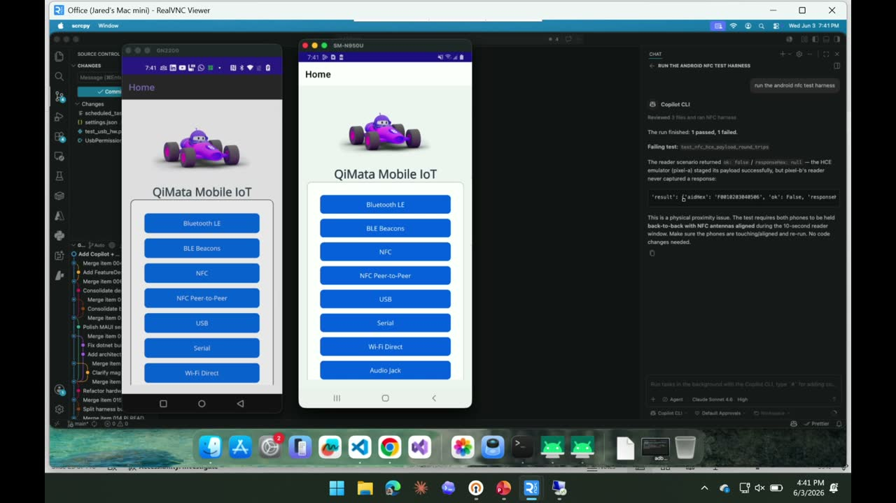
Chapters
Official description
Most app demos stop at REST APIs. This live demo talks to real hardware. I’ll show a .NET app that discovers a device over BLE, exchanges data over NFC or serial, and turns raw device signals into a usable workflow. You’ll leave with a practical pattern for structuring device services, handling platform differences, and deciding when local connectivity beats the cloud. Seating for this session is first-come, first-served. Add it to your schedule to plan your day and arrive early to secure a spot.
Summary
Overview
A live, hardware-focused .NET demo arguing that apps gain a defensible advantage and a "magic" user experience when they interact with the physical world rather than stopping at REST APIs. The session centers on a custom test harness that lets coding agents develop and validate against real, physically connected hardware, then walks through three core connectivity protocols (BLE, NFC, USB) framed in familiar web-development terms.
Key announcements
- Custom hardware test harness for agentic workflows (~00:07:01
 m05s
m05s m10s
m10s p05s
p05s p10s) — A scripted orchestration layer (not unit tests, mocking, or manual QA) that connects to real hardware, deploys apps, and prints line-by-line output so a coding agent can see what worked and what failed.
p10s) — A scripted orchestration layer (not unit tests, mocking, or manual QA) that connects to real hardware, deploys apps, and prints line-by-line output so a coding agent can see what worked and what failed. - Live NFC test-harness demo against remote hardware (~00:09:28
 m05s
m05s m10s
m10s p05s
p05s p10s) — Copilot ran an Android NFC test against two phones physically connected to a Mac mini in the speaker's basement, exercising reader/writer roles and packet comparison; the test returned false because the phones were intentionally mis-stacked.
p10s) — Copilot ran an Android NFC test against two phones physically connected to a Mac mini in the speaker's basement, exercising reader/writer roles and packet comparison; the test returned false because the phones were intentionally mis-stacked. - Uno Platform agent-first studio release (~00:02:40
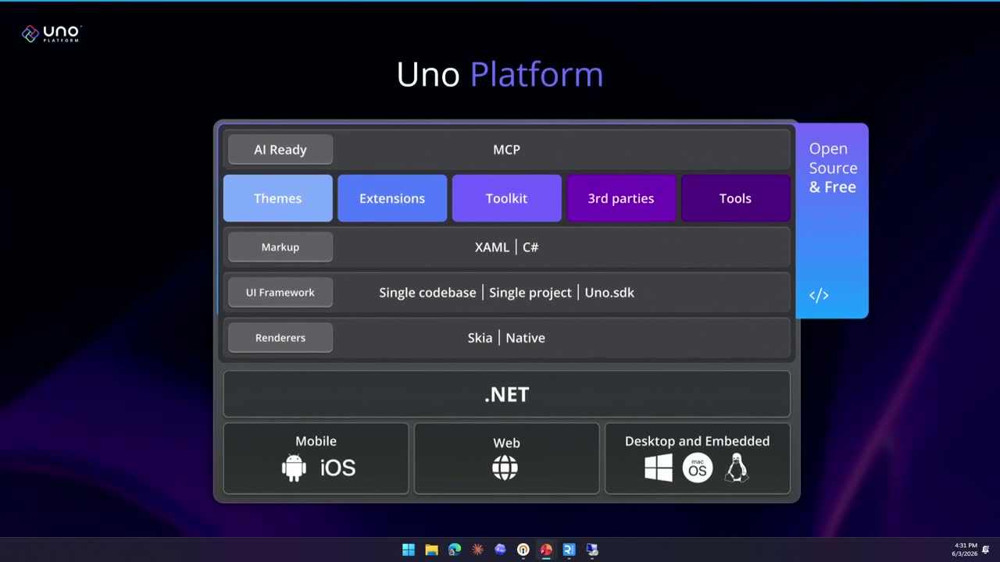
m05s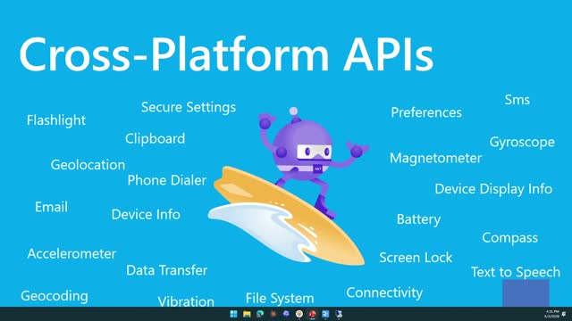
m10sp05sp10s) — The speaker noted Uno's new studio is "agent first" with predefined skills and an MCP server for development that can build cross-platform apps from a design.
{kind=link}
{kind=link}
{kind=link}
{kind=link}
Topics covered
- Using on-device hardware (accelerometers, geolocation, NFC, Bluetooth) to add physical-world context unavailable to web apps.
- Trust and identity scenarios: QR-code login backed by a Bluetooth co-location check, and Wi-Fi onboarding via NFC tap exchanging SSID and credentials.
- The cyclical movement of inference between cloud and edge, and the competitive "moat" of shipping physical hardware.
- Bluetooth Low Energy mapped to REST: services as API roots, characteristics as endpoints, UUIDs for spec compliance, read/write/notify as HTTP verbs, descriptors as headers; example using a humidity/temperature sensor with an LED.
- NFC fundamentals: tag types, reader/writer toggling, peer-to-peer large-data exchange, and regional payment tag-type differences (Japan vs. US).
- USB enumeration sequence (reset, descriptor, address assignment, config) and bulk transfer between devices.
- Platform differences: Android USB versus iOS requiring MFi certification.
Notable quotes
"It always feels like magic when your app actually interacts with the real world, when it will unlock a door, when it will interact with a machine."
"It's really hard to copy your competitor's hardware quickly... than it is to point a copilot at your competitor['s] software and say, can you make that for me real quick?"
"Android, in the case of USB, is not iOS. It is not equivalent to iOS... you need an MFi certification if you want to be able to connect USB devices compliant with iOS."
Products and tools mentioned
- .NET
- .NET MAUI
- Uno Platform (Uno Studio)
- GitHub Copilot
- Model Context Protocol (MCP)
- Bluetooth Low Energy (BLE)
- NFC (Near Field Communication)
- RFID
- USB / ADB
- Raspberry Pi
- Mac mini
- Google Pixel [inferred]
- FPGA
- Apple MFi certification
Speakers featured
- Jared Rhodes — presenter; Microsoft MVP [inferred from session tags]
Follow-up resources
- The session's code repository ("refill" / "repo"), referenced as containing the test harness, deployment setup, and protocol demos, though no explicit URL was provided in the transcript.
Frames
{kind=link}
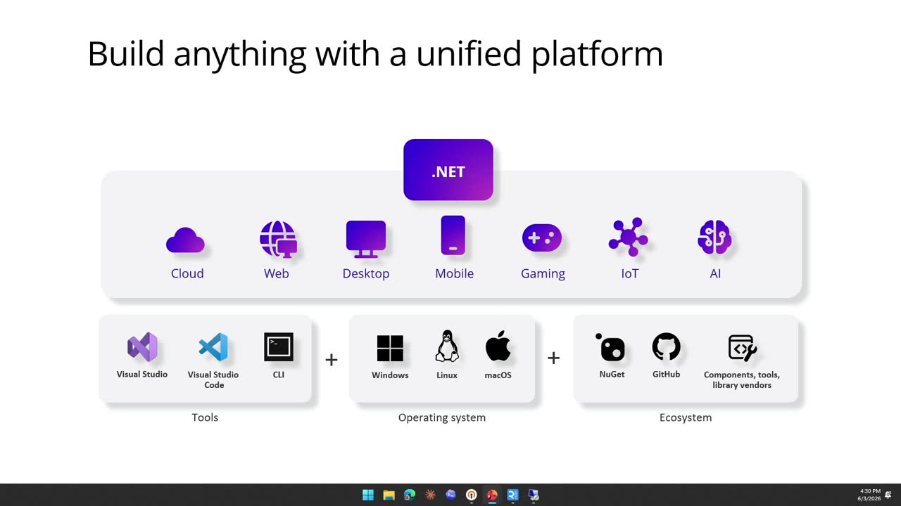
{kind=link}
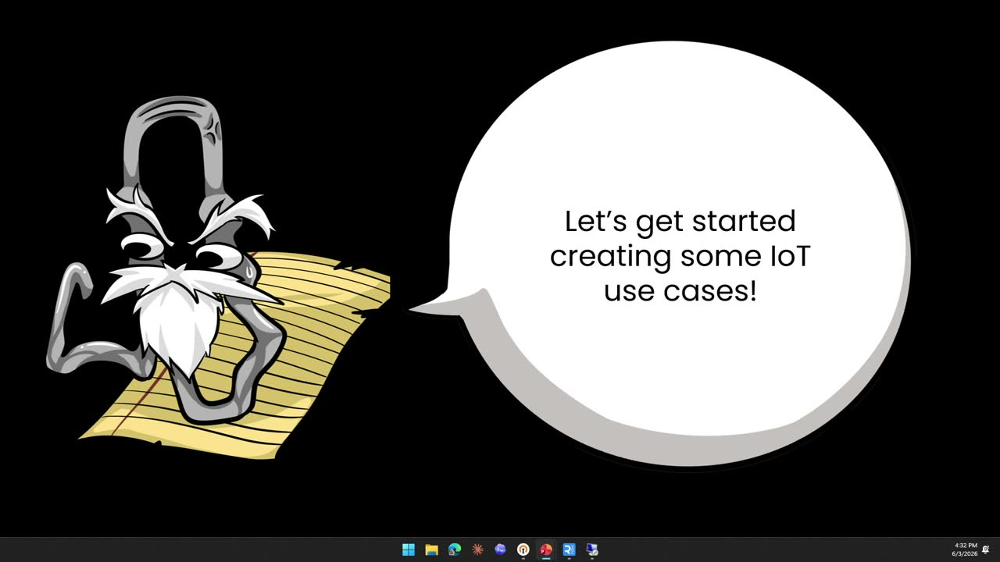
{kind=link}
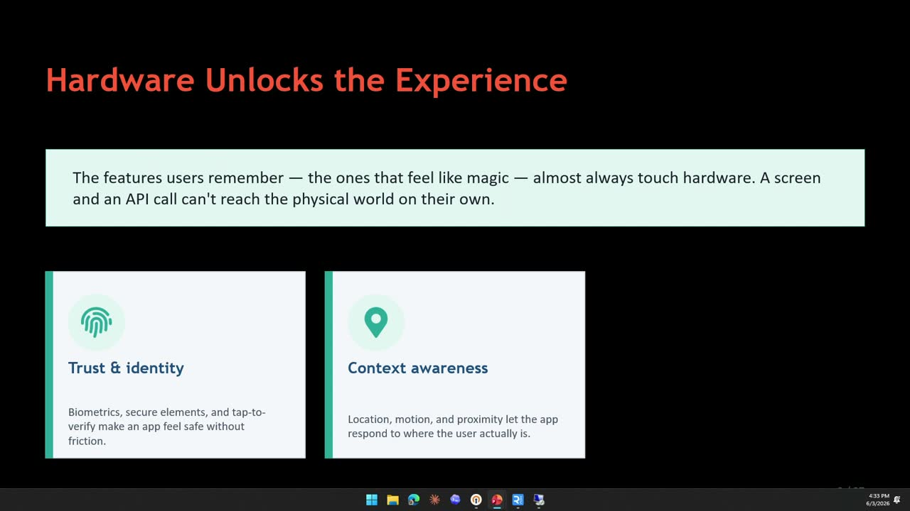
{kind=link}
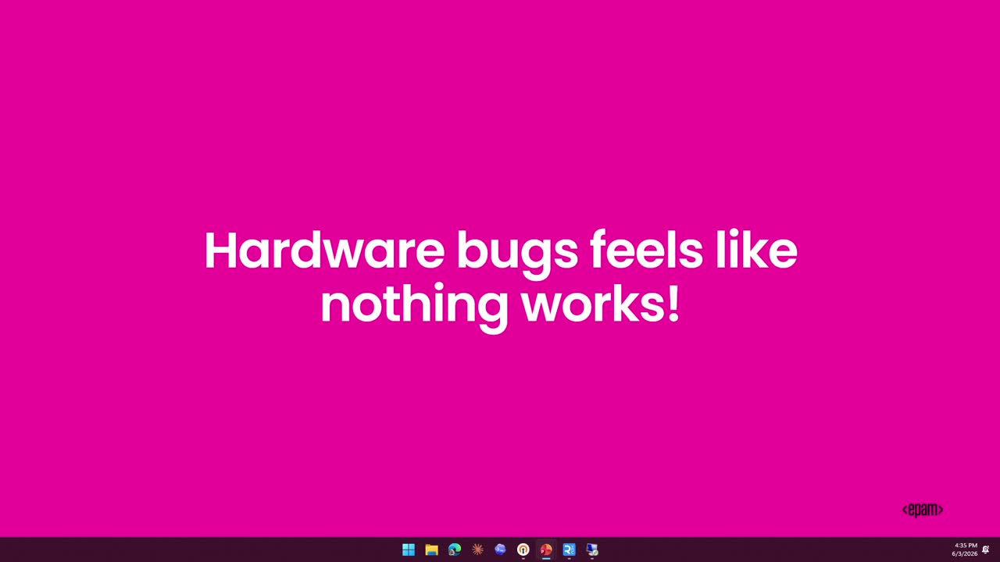
{kind=link}
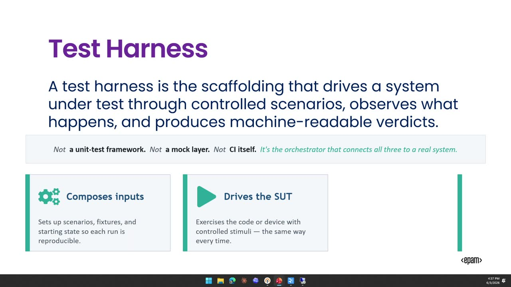
{kind=link}
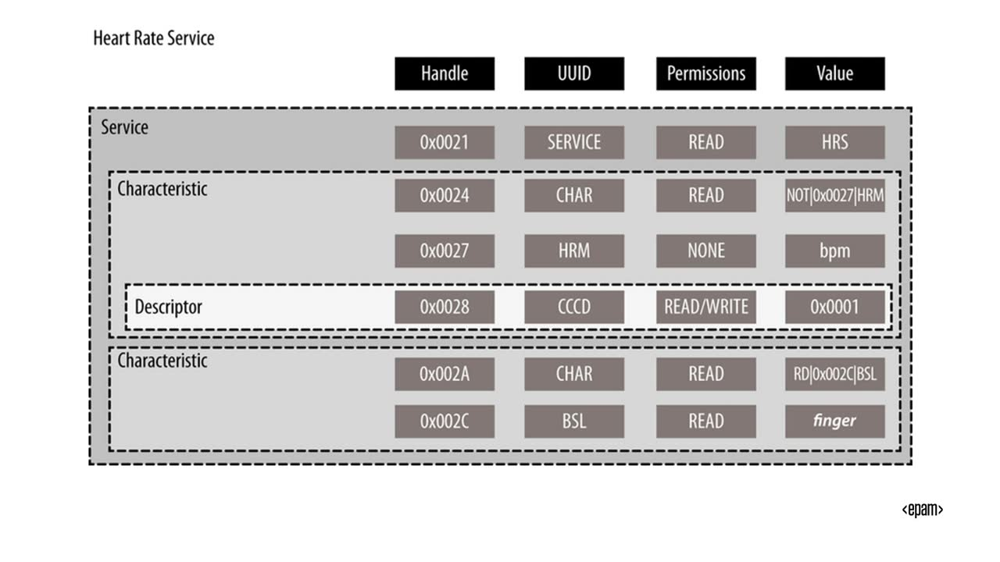
{kind=link}
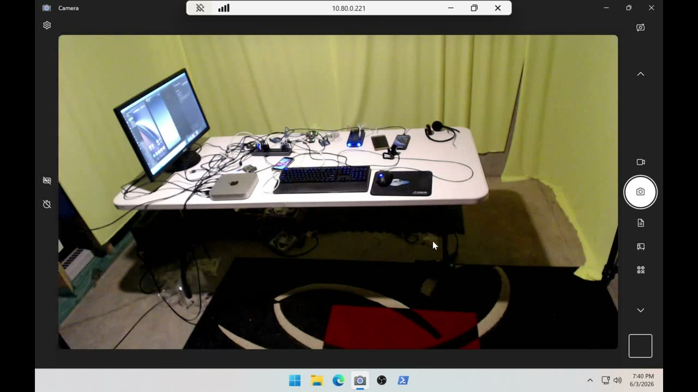
{kind=link}
{kind=link}
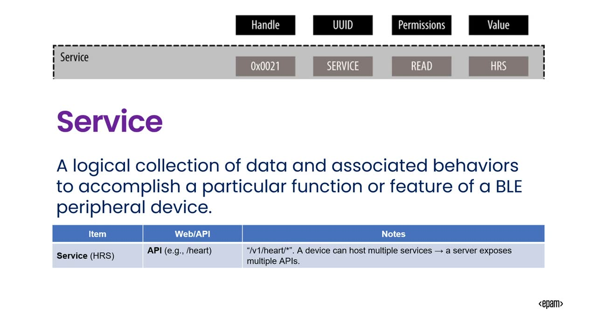
{kind=link}
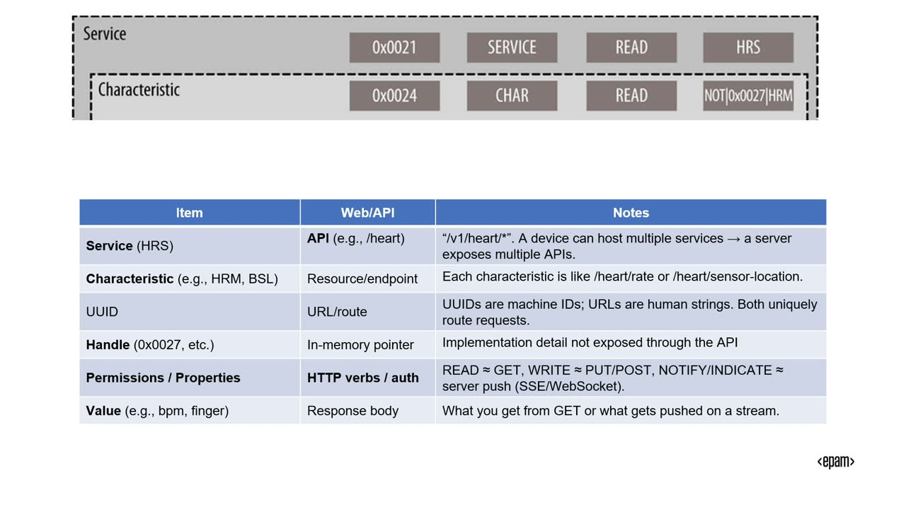
{kind=link}
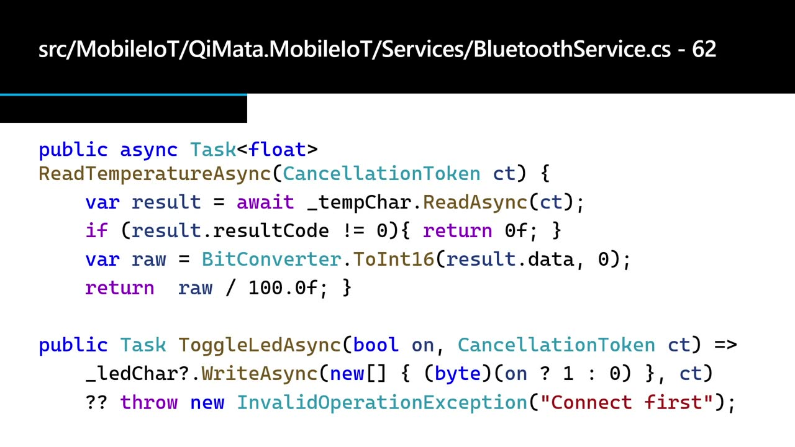
{kind=link}
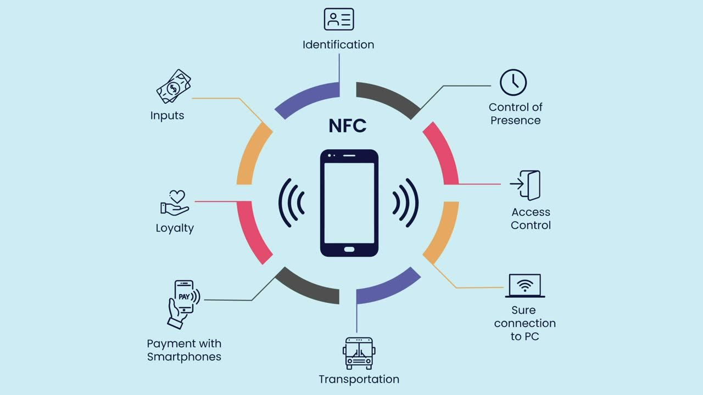
{kind=link}
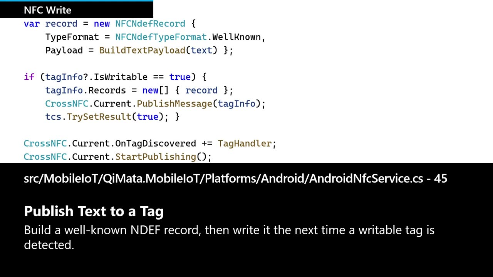
{kind=link}
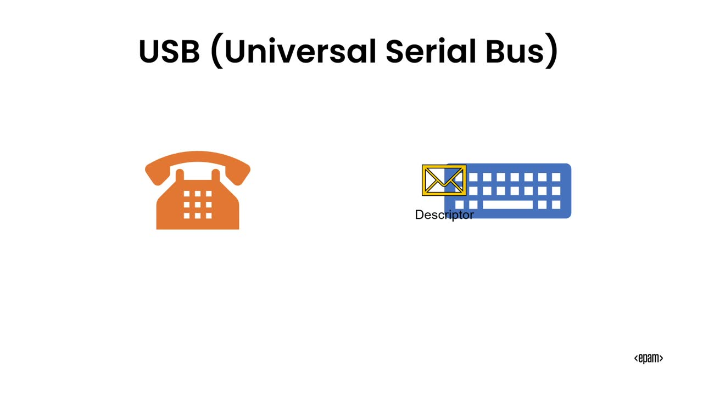
{kind=link}
Transcript
Show / hide transcript (37,858 chars)
[00:00:00] All right, hello, hello. [00:00:02] As you heard, my name is Jared Rhodes and we [00:00:04] have these like rehearsal sessions that we do with Microsoft [00:00:07] or they're supposed to give feedback. [00:00:09] So they said that because I called it Beyond REST. [00:00:11] I need to let you know that this isn't about [00:00:13] REST, it's about using hardware, not about like web development [00:00:16] or REST or anything like that. [00:00:18] So that that was their first bit of feedback. [00:00:20] So what we're going to talk about today is we're [00:00:22] going to 1st talkabout.net development as it touches hardware. [00:00:25] We're going to talk about a few different hardware protocols. [00:00:28] We're going to talk about a testing harness for hardware [00:00:31] and how we can actually use that in an agentic [00:00:33] workflow. [00:00:34] And then we're going to show some demos. [00:00:36] And that's not the exact order. [00:00:37] I've rearranged it a little bit, but you get the [00:00:39] general idea. [00:00:41] Let's meet Jason. [00:00:42] All right. [00:00:42] The second bit of feedback I got was I was [00:00:44] making a joke that Jason wanted to learn how to [00:00:46] become a hardware developer because he was scared about all [00:00:49] the agents coding, you know, writing all the code. [00:00:51] And they said that there's some real anxiety about that [00:00:54] and I needed to cut that joke. [00:00:56] So I did. [00:00:56] I cut that joke. [00:00:57] That's not what Jason is doing, and he needs to [00:01:00] justify this fear to management so that he can get [00:01:03] some budget to work through this. [00:01:06] I stole some slides or I borrowed or they gave [00:01:10] them to me from James Montemagno and Sam about.net Maui [00:01:14] and the Uno platform. [00:01:15] Uno has a booth here and I'm sure somebody will [00:01:18] talk to you about.net Maui if you ask enough peopleinfact.net [00:01:21] Maui in the code base that I'm using, that was [00:01:23] the base that I started building on. [00:01:25] This is a code base. [00:01:28] I've been doing this demo set for like a decade [00:01:31] now and I started, you know, copilot started to get [00:01:35] big. [00:01:35] You're supposed to program with GitHub Copilot. [00:01:37] And I was like, let's see how this works. [00:01:39] And so I started to write it from scratch with [00:01:41] that. [00:01:41] And the first thing I did was I used mauiandthisis.net [00:01:44] talk. [00:01:44] So guys, youknow.net, it runs all of it, right? [00:01:47] They've got it where it can run theyvegotlike.netpackagesor.net frameworks. [00:01:51] They can run on very limited hardware. [00:01:53] It it runs everywhere. [00:01:56] And if you use Maui, it can run on Win [00:01:58] UI on the Mac, on iOS and on Android out-of-the-box. [00:02:02] And the reason we're going to be using Maui and [00:02:05] Uno is because we are going to be using the [00:02:07] hardware on the phone to talk to other hardware or [00:02:10] to give a better experience to the user. [00:02:12] And out-of-the-box we get all kinds of things on the [00:02:15] on the mobile phones or on any of the the, [00:02:18] I don't even know what to call desktop, laptop, form [00:02:21] factor, tablet. [00:02:22] But they do have things like accelerometers. [00:02:24] They do have things like Geo location things are a [00:02:27] part of the physical world that add an additional layer [00:02:30] to the user experience that you don't get from a [00:02:32] web app usually. [00:02:35] If you haven't saw Uno, go check them out. [00:02:37] They've got a booth. [00:02:37] They'll talk to you way more than I will. [00:02:39] Just know they have this. [00:02:40] They've got some new release for their studio. [00:02:43] It's agent first, so they've got all these predefined skills. [00:02:46] They have an MCP server for development, so you can [00:02:49] just kind of run studio. [00:02:50] It has MCP, it has skills. [00:02:52] You can point it at a design and it can [00:02:54] build a very robust app that runs on multiple different [00:02:57] platforms and web. [00:02:59] Yeah, it's got all kinds of stuff. [00:03:00] If you want to know more, they've got a booth. [00:03:02] I'm sure they'll talk to you about it. [00:03:04] OK, so Jason wants to get started making some IoT [00:03:07] use cases because he needs to sell this to his [00:03:10] management. [00:03:12] Like I was saying earlier, I I've been doing this [00:03:14] for a long time and, and what these hardware experience, [00:03:17] what what the hardware actually allows you to do is [00:03:20] add a new experience that is very different. [00:03:23] Who here currently has to scan AQR code to login [00:03:26] now? [00:03:27] Like who here has had to that that new key [00:03:29] form factor that you have to do a bunch of [00:03:32] people right? [00:03:33] What you may not know and that I didn't know [00:03:35] until it was on my desktop is that actually uses [00:03:38] a Bluetooth connection. [00:03:40] So when you scan that QR code, your phone is [00:03:42] actually connecting to the other machine over Bluetooth to verify [00:03:45] that you are Co located and it sends secrets that [00:03:47] way. [00:03:48] I learned that because my desktop didn't have a Bluetooth [00:03:51] adapter and when I finally got it updated at home, [00:03:53] I couldn't log into work for like 4 days until [00:03:55] they shipped me the Bluetooth adapter. [00:03:57] So it gives a different experience in a different knowledge [00:04:01] of how the user is interacting with what you're doing. [00:04:04] So again, trust and identity, right? [00:04:06] Right Now for my workflow, if I wanted to set [00:04:08] it up right, I can log into my phone with [00:04:10] my face, log into my authenticator, and just take a [00:04:12] picture of AQR code and behind the scenes without me [00:04:15] knowing about it. [00:04:16] There's underlying connections and hardware that's being used to verify [00:04:19] that all of these things are secure behind the scenes. [00:04:23] Or also trust and identity. [00:04:24] You can set it up. [00:04:25] Or if I want to join a Wi-Fi network, I [00:04:27] can just tap my phone to an NFC that does [00:04:29] the exchange of the SSID and password or any other [00:04:32] credentials, and it just works. [00:04:33] And I know that they're where they are because they're [00:04:36] physically touching the Wi-Fi. [00:04:38] It can be context to where I can know if [00:04:40] my user is moving, I can know where my user [00:04:42] is. [00:04:42] I can know a lot of different things about my [00:04:44] user that I wouldn't have as easily through web. [00:04:47] And you can actually do, it always feels like magic [00:04:50] when your app actually interacts with the real world, when [00:04:52] it will unlock a door, when it will interact with [00:04:55] a machine or something where you just press a button [00:04:58] and physical things actually change. [00:05:01] And as I actually got very lucky that the keynote [00:05:03] was all about moving to the edge because I made [00:05:05] this slide a while ago. [00:05:07] But yeah, we've got a lot of inference that we're [00:05:10] running and we go through cycles of this. [00:05:12] I, again, I've been doing this talk for a decade. [00:05:13] Around 2017, I had the same run the AI on [00:05:16] the edge portion of this because that's where we always [00:05:20] go to. [00:05:20] The models get too big and then you can't run [00:05:22] them locally. [00:05:23] We get these like token shortages type situations that we [00:05:25] are now. [00:05:26] So we run it locally and it's just a cycle [00:05:28] that we go through. [00:05:29] So things constantly move from the cloud to the edge [00:05:32] and you want your apps to be able to use [00:05:34] that properly. [00:05:35] And knowing how to use that hardware is key. [00:05:38] We're looking at on device intelligence. [00:05:40] We don't have to start with the cloud is the [00:05:42] 1st place that we go to. [00:05:43] And if you ever do, if you ever have been [00:05:45] in the world where you've shipped apps with physical hardware, [00:05:48] there's a there's a bit of a Moat there. [00:05:50] If you're thinking about this in terms of market fit [00:05:53] or or I guess a startup, because it's really hard [00:05:55] to copy your competitors hardware quickly much it's much harder [00:05:59] to do that than it is to point a copilot [00:06:01] at your competitor software and say, can you make that [00:06:04] for me real quick? [00:06:09] Have you ever got hardware that didn't work? [00:06:12] They like you bought it, it got shipped to you, [00:06:14] you open the box and there was a bug. [00:06:15] It feels like you bought a brick. [00:06:17] Like it feels like the nut like nut. [00:06:18] The hardware could do 99% of what it's supposed to [00:06:21] do. [00:06:21] But if there's a bug, you're like, oh, I guess [00:06:24] it doesn't work And that's what hardware bugs feel like. [00:06:27] So if we want to do that, we need to [00:06:29] again, when I wrote this, when I, when I was [00:06:31] getting started with this, I decided to start it from [00:06:34] scratch using the Copilot and other coding agents and nothing [00:06:38] worked. [00:06:39] When I wrote it the first time I wrote it, [00:06:41] it was like, yes, that's the exact Bluetooth implementation. [00:06:43] That's how it works. [00:06:44] Yes, that's exactly how NFC works. [00:06:46] And then I would go and I would like touch [00:06:47] 2 phones together and nothing would work. [00:06:49] So I had to figure out exactly how I was [00:06:51] going to make this something that a coding agent could [00:06:54] actually program for instead of me saying do this tap. [00:06:57] No, that didn't work tap. [00:06:59] So what I did was I built a test harness. [00:07:01] So what that really is I'll show you. [00:07:04] And I've actually, I don't have it here. [00:07:05] I've got it in my basement and I've got some [00:07:07] cameras pointed at it. [00:07:08] But it is the box that I'm developing on or [00:07:12] a box for testing physically connected to the hardware and [00:07:16] it knows how to use it. [00:07:17] So it's not a unit test framework, it's not a [00:07:19] mocking layer and it's not like continuous integration, though it [00:07:23] can be used in it. [00:07:24] It's just the orchestration that connects to the real system. [00:07:28] So what I can do, and I'll, I'll show it [00:07:31] in a very quick slick demo. [00:07:32] You'll have to see the repo to really understand what's [00:07:34] going on. [00:07:35] But it composes the inputs of what's going to be [00:07:37] allowed or what's going to be used in the particular [00:07:39] test. [00:07:41] And then it can drive the software or drive the [00:07:43] system that's under test. [00:07:45] So it can actually run the test, deploy and everything, [00:07:48] and it has a way to print out line by [00:07:50] line so that the agent can see what's going on [00:07:53] as it runs through the test. [00:07:55] Because as it's debugging the hardware, there is always the [00:07:57] possibility that the hardware itself has failed. [00:07:59] So it needs sort of a line by line to [00:08:01] see exactly what steps were taken and what worked and [00:08:03] what didn't. [00:08:05] So it's not unit test, right? [00:08:07] We're all used to that where you can mock everything [00:08:09] and it's not manual QA. [00:08:10] It's something in the middle that's scripted and it's on [00:08:12] real hardware. [00:08:13] And it allows me to actually work with all of [00:08:15] these different hardware components. [00:08:17] So it will run on my dev box and it [00:08:19] is able to deploy the apps to the phone and [00:08:21] then it can cross communicate with the app on the [00:08:24] phone. [00:08:25] So it can actually send commands on what it's trying [00:08:27] to test. [00:08:28] That looks a little bit like this. [00:08:29] It's USB connected. [00:08:31] It can do ADB on the Android. [00:08:33] I have a Python file that will let me do [00:08:36] it on iOS. [00:08:36] And then there are Raspberry Pi's that are set up [00:08:38] to connect over console. [00:08:39] Then it can communicate with those because it can iterate [00:08:41] over them. [00:08:42] And this is what it would look like just to [00:08:44] run the test and you'll see it in the code [00:08:45] base. [00:08:46] I can ask what hardware is connected. [00:08:48] I can then have different ways in which I test [00:08:51] as I go through because if I ask it, if [00:08:53] I tell it make these specific changes and it makes [00:08:56] any changes to like let's say the Bluetooth module, the [00:08:59] coding agent then knows why I need to run the [00:09:02] hardware test against the Bluetooth test harness. [00:09:05] Otherwise, I won't know if this actually works. [00:09:07] So I can see what is available to the system, [00:09:10] deploy it to the system and run it. [00:09:12] So I've talked about it enough. [00:09:14] Let's see how much stuff is actually still running in [00:09:16] my basement. [00:09:19] All right, we'll launch it here. [00:09:28] So this is the machine that everything is connected to. [00:09:31] I've got 2 phones connected to it. [00:09:35] So what we'll do is they're not running anything right [00:09:37] now. [00:09:38] I'll just tell copilot run the no. [00:09:43] How do I get how do I get my screen [00:09:47] so I'm not fuck Uno momento. [00:09:56] OK, this will work. [00:09:56] This will work. [00:09:59] OK, I hope you used your imagination on that. [00:10:03] Let's get that pulled back up. [00:10:05] It doesn't like it when we change monitors. [00:10:07] OK, so this is the actual machine that's running the [00:10:10] IT connected to the hardware. [00:10:11] These are two physically connected phones that you're seeing streaming [00:10:14] up here. [00:10:14] And all I'm going to do is I'm going to [00:10:18] ask Hopilot to run the run the Android NFC test [00:10:22] harness. [00:10:24] OK, so because watching coding agents is real fun as [00:10:27] it iterates through the 1st 10, as it tries to [00:10:29] remember exactly what I was saying when I said run [00:10:32] the test harness, we'll quickly hop over to another view. [00:10:36] So this is the hardware setup in the basement. [00:10:39] So the Mac mini is what you just saw me [00:10:41] log into. [00:10:42] And the actual NFC tests are the phones over here [00:10:45] farthest to the right. [00:10:47] That's why they're stacked one on top of another. [00:10:50] The test actually won't work because they're not stacked correctly. [00:10:53] So what it'll do is it'll run through it, it'll [00:10:56] deploy the apps, and then it'll attach to those apps [00:10:58] through the test harness. [00:11:00] So let me go back, take a look here. [00:11:04] So I'm going to try to entertain you because I [00:11:07] don't know exactly how long it'll take for it to [00:11:09] realize. [00:11:10] So it is running the test harness, it's seeing the [00:11:13] NFC tier, and it should now start launching the app [00:11:16] and we should see it run up on the phone [00:11:18] because it worked 10 minutes ago before we started this [00:11:21] talk. [00:11:22] I'm very much hoping we see the app launched now [00:11:24] that I'm doing the talk in front of everyone here. [00:11:29] And then once we're through with that, we're going to [00:11:32] take a look at the different protocols, get a little [00:11:34] bit of understanding of what we can do with those [00:11:37] and do it. [00:11:37] OK. [00:11:37] So yeah, so it is launching the apps. [00:11:39] It now has an ability. [00:11:40] So this is what Copilot built for me over the [00:11:43] over like the past year and a half. [00:11:45] This nice UI, you're not going to see the actual [00:11:48] test run. [00:11:48] It is feeding the information back to Copilot who is [00:11:52] launching the NFC radios and putting one into reader, putting [00:11:56] one into writer, trying to send a pre made random [00:11:59] packet between the two and seeing if the receiver or [00:12:03] the reader has the exact same packet that the writer [00:12:07] is sending. [00:12:08] OK, so it returns false. [00:12:10] It sees that it can't see that it says that [00:12:12] the Pixel B never actually received that packet. [00:12:15] So there may be some problem in there. [00:12:17] Now, I'm not going to show you a full debugging [00:12:19] of hardware that is physically disconnected from me all the [00:12:22] way back in Atlanta, but you get the idea that [00:12:25] if I want to start making changes through a coding [00:12:27] agent, this will tell me if my actual hardware works. [00:12:32] And so now that we've gone through that, let's go [00:12:36] back and actually learn a little bit about the protocols. [00:12:41] So I'll cover three main protocols. [00:12:42] I'll cover Bluetooth low energy, NFC and Wi-Fi. [00:12:46] So for Bluetooth low energy, it came out in about [00:12:49] 2014. [00:12:50] It was supposed to be a way in which you [00:12:51] could use Bluetooth. [00:12:52] And I'll call it a rest like faction since we [00:12:54] have rest in the title. [00:12:56] So I'll go through the heart rate service from the [00:12:58] Bluetooth spec. [00:13:00] So the way the Bluetooth spec works is if I [00:13:02] go to the Bluetooth website, which has the spec in [00:13:05] it, I can look for a pre made set of [00:13:07] services. [00:13:08] Those services all have a unique UUID. [00:13:10] If my app has that UUID, or let me say [00:13:13] instead of my hardware returns that UUIDI now know that [00:13:17] it's compliant to a specific set of endpoints. [00:13:21] So if I want a heart rate service and I'm [00:13:23] compliant to the spec, any device that has the heart [00:13:25] rate service works. [00:13:27] That's how it's so easy for your device to know [00:13:29] or you're apartment to know the battery of all these [00:13:31] different things you connect to because the battery is a [00:13:34] premade battery, is a pre made service in the Bluetooth [00:13:37] spec. [00:13:37] OK, so let's go over these real quick. [00:13:39] This is what the diagram looks like from the Bluetooth [00:13:41] spec for the heart rate service. [00:13:43] So at the highest level under the device is the [00:13:46] set of services that it has. [00:13:48] So it's the logical collection of data and associated behavior [00:13:50] for a particular function or feature. [00:13:52] We're going to relate this back to web development because [00:13:54] that's the easiest way for me to get these ideas [00:13:56] across. [00:13:57] So if I were to have a service equivalent for [00:14:00] Bluetooth in the web, that would be the root of [00:14:02] an API path. [00:14:03] So if I wanted a heart rate service in in [00:14:07] the web, I would have it at slash heart or [00:14:10] heart rate service or right here in my notes V1 [00:14:14] heart. [00:14:14] So it can host multiple services and that would be [00:14:16] one of them. [00:14:17] And the way I'm going to discover that is I [00:14:20] can actually just pull in a open source library that [00:14:23] has the ability for me to scan for devices. [00:14:26] If I see one, I can connect to it. [00:14:28] I can actually see all the different services that are [00:14:30] available from that device. [00:14:32] And if I see one that I like, I can [00:14:33] go ahead and say that it's compliant to use. [00:14:36] Now I'm showing a different service here as the example. [00:14:39] I've actually got one that's humidity, temperature and an LED. [00:14:43] And that's just because it's really hard to do a [00:14:45] like, if I want you to go and take my [00:14:47] code base, it's really hard for you to do a [00:14:49] heart rate like example. [00:14:51] It's a lot easier if I give you one that's [00:14:53] just A11 sensor and one LED. [00:14:55] So first we'll go and we'll see the service. [00:14:58] We see all the different UUI DS. [00:14:59] I know which one is for the service that I'm [00:15:01] looking for. [00:15:02] So I connect to that or I get that service [00:15:04] and then I can use that service to then use [00:15:07] the characteristics to edit the functionality. [00:15:11] Well, Jared, what are the characteristics? [00:15:14] Well, the characteristics sit under the service. [00:15:16] They are resource endpoints. [00:15:17] Each characteristics is like the heart rate or the heart [00:15:20] rate sensor location. [00:15:21] Think about that. [00:15:22] If we're talking about it in web terms, right now [00:15:25] I have the different endpoints that I want underneath heart. [00:15:28] So I have one for heart slash rate and one [00:15:30] for heart slash sensor location. [00:15:34] To break it down even more, you'll have a characteristic [00:15:37] which we just described. [00:15:39] You'll have AUUID. [00:15:40] So each one will have its own unique UUID so [00:15:42] that when you're spec compliant, you instantly know which endpoint [00:15:46] is which. [00:15:47] There's going to be an in memory pointer, don't worry [00:15:49] about that. [00:15:50] And then you'll have permissions and properties described on the [00:15:52] characteristic, as you can see up here where it says [00:15:55] read. [00:15:55] So those are going to be equivalent to my Http://verbs [00:15:59] or authorization because it's not exactly A1 to 1. [00:16:02] So a read is going to be equivalent to a [00:16:04] GET, a write is going to be equivalent to a [00:16:05] put in the post. [00:16:07] And then there's a little bit difference where we have [00:16:09] the notifier indicate, and that's more of a streaming service. [00:16:12] If I'm looking for a heart rate service, I kind [00:16:14] of want it to stream the heart rate to me [00:16:16] rather than for me to constantly request what is the [00:16:18] current heart rate. [00:16:20] Or if I, if I want something like a notification [00:16:22] of the battery life at a certain level or yadda, [00:16:25] yadda, yadda, that's how I can do it through notifications. [00:16:28] And then finally, the actual value itself is obviously going [00:16:31] to be equivalent to the response body of that HTTP [00:16:33] REST endpoint. [00:16:34] And it's important to know that because we are at [00:16:37] the low level here. [00:16:38] So I need to know the values type so that [00:16:40] I can understand exactly like is it, you know, 2 [00:16:43] bytes? [00:16:44] What are those two bytes mean and how do they [00:16:45] map back? [00:16:47] And this is what it looks like. [00:16:48] If I want to read or write, I just once [00:16:51] I have that characteristic that we saw in the last [00:16:53] slide, well, it just lets me read it and I [00:16:56] can take it and I can convert it into whatever [00:16:58] value equivalent it needs to be. [00:17:00] In this case, I'm reading a, I'm reading a float, [00:17:02] or excuse me, an N 16 that I'm going to [00:17:05] converting into a float because that's just how it works [00:17:08] for that particular service. [00:17:09] And then for the toggling of the LED, if I [00:17:12] want to write, I'm just writing for it. [00:17:14] It's a byte array of 1 byte. [00:17:16] It's either a high or a low, and that determines [00:17:18] whether the LED is on or off. [00:17:19] But I just call write async and I give it [00:17:21] the expected body of that as a byte array. [00:17:24] And then finally, a little last little bit is the [00:17:26] descriptor. [00:17:27] So the descriptor provides additional information. [00:17:29] So you can think about that as like an Http://header. [00:17:32] It's just more information about the characteristic, like can it [00:17:35] enable notifications? [00:17:36] Does it have different capabilities that aren't exposed in the [00:17:41] upper level of the characteristic? [00:17:44] OK, so that's going to be the Bluetooth low energy. [00:17:48] That's how you would use it if you want to [00:17:50] set up something that utilizes a device that is Bluetooth [00:17:53] capable. [00:17:54] And then Jason's wondering, he heard that you could do [00:17:57] like indoor GPS and stuff like that. [00:17:58] And I mean, at this point, I've seen it to [00:18:00] where you can do X-rays of people's bodies through the [00:18:03] wall using Wi-Fi. [00:18:04] So yes, with Bluetooth you can do indoor GPS, but [00:18:06] you can basically do that with any system that has [00:18:09] access points over distance. [00:18:10] So you can see the strength of the signal. [00:18:13] All right, So near field communication, it's where you tap, [00:18:16] right? [00:18:17] Everyone's used tap. [00:18:17] In fact, most people know it as the like tap [00:18:20] to pay for Apple. [00:18:21] In fact, the reason NFC, in my opinion, isn't as [00:18:24] prolific across the industry is because Apple, for nearly the [00:18:28] first decade of the iPhone, didn't expose NFC to the [00:18:31] user layer. [00:18:32] So Apple could use it for tap to pay, but [00:18:35] as a user, you couldn't actually invoke the NFC hardware [00:18:38] until about 2018 or 2019, which was a little late [00:18:42] for people to start adopting it in mass. [00:18:45] But now we have it as a bunch of different [00:18:46] things. [00:18:46] You can use it for ID, you can use it [00:18:48] for access points, you can use it for payment systems, [00:18:50] you can use it for all kinds of things. [00:18:54] If you've ever used RFID, which I'm sure some of [00:18:57] you have, it was the, you know, previous widely accepted [00:19:01] TAP protocol due to time constraints, we'll just say that [00:19:04] RFID is like a barcode, right? [00:19:06] You got a bit of a limited set of information, [00:19:09] whereas NFC is going to be more of a AQR [00:19:11] code. [00:19:12] It is much more complex. [00:19:14] There are different tag types that you can write and [00:19:16] you can read from. [00:19:19] To give an idea of even further into that, like [00:19:21] the Japanese payment system uses a different tag type than [00:19:25] the US pay system. [00:19:26] They're just, they're just different tag types for whatever reason [00:19:28] when they're writing all the specs out and people are [00:19:30] adopting it, payment systems there work different than here by [00:19:33] a small deviation of the tag type. [00:19:35] And you can have everything. [00:19:36] You can even have it. [00:19:37] My, my nephew came to visit, he was like, he's [00:19:39] like 2 years old and I had an NFC card [00:19:42] and I set it up just to be different URLs. [00:19:44] So he would tap it and oh, it's a new [00:19:47] URL. [00:19:47] And he loved it because he liked to do it [00:19:48] at the hotel room. [00:19:49] We could scan and he was just loving it every [00:19:51] time he go to a new URL. [00:19:52] And that's kind of stuff you can do with NFC. [00:19:55] So this is what it looks like. [00:19:55] If I want to read a message, I basically just [00:19:58] say I have a certain tag type that I'm looking [00:20:00] for. [00:20:00] I would like to turn on the radio and if [00:20:03] you receive a message of this type, please notify me [00:20:06] that you have. [00:20:07] And then you have to play with the funky.net wiring [00:20:09] of events back to callbacks and make sure that you [00:20:11] capture that message. [00:20:14] Similar. [00:20:15] If I want to write, I'm going to say, hey, [00:20:16] I would like to publish this message and then. [00:20:19] At any point which you see that radio has connected [00:20:21] and actually sent that message and received a confirmation, please [00:20:24] inform me of that. [00:20:25] And then that's how I write and I can say, [00:20:27] OK, as you see, I've got this on tag discovered [00:20:29] and start publishing. [00:20:31] You just literally say please start and then someone's got [00:20:33] to figure out just like when you're tapping to pay [00:20:35] with your credit card. [00:20:36] Have I actually invoked this OK in the instance of [00:20:40] in the For time's sake, we're going to skip a [00:20:44] lot of the NFC. [00:20:45] And Jason says I bet I can set this up [00:20:47] as a communication protocol for large data exchange, because why [00:20:51] not? [00:20:52] We always try to extend things well beyond what the [00:20:54] usefulness is. [00:20:55] And technically within the NFC spec, you can, there's NFC [00:20:58] peer-to-peer. [00:20:59] If you think about it, when I tap to pay [00:21:01] with my phone, I'm writing whenever I tap the card [00:21:04] and it gives me a URL I'm reading. [00:21:06] So it can do both. [00:21:07] So I can toggle between reader and writer mode. [00:21:10] And technically I can have long payloads in, in writer [00:21:12] mode that gets read and then toggle a swap and [00:21:14] write. [00:21:15] And it is a part of the spec where they [00:21:17] can communicate 22 phones and or two devices. [00:21:20] And the good thing there is you know that they [00:21:22] are physically connected, they are physically touching. [00:21:24] So you know where the wireless communication is coming from. [00:21:28] Just interesting. [00:21:28] If you ever want to set something like that up, [00:21:31] we've got the USB. [00:21:32] So I'll go over this real quick because we're running [00:21:33] out of time. [00:21:34] Whenever you plug something in for USB, you hear the [00:21:36] boop, boop. [00:21:37] There's actually a set of things that's happening. [00:21:39] First the the machine is sending the device the reset [00:21:43] signal. [00:21:44] It's saying, hey, thank you, I saw that reset signal. [00:21:47] And then it's sending, hey, I need you to tell [00:21:49] me a lot about yourself. [00:21:50] And it'll say, OK, here's my descriptor. [00:21:52] The descriptor is important. [00:21:54] If we go back to that video of my basement, [00:21:56] I've got like 3 or 4 different USB hubs all [00:21:59] wired into each other. [00:22:00] So the descriptor is going to have to tell it, [00:22:02] hey, here's my address here, here, here, here, and here. [00:22:05] And that's how you're going to send me a message. [00:22:07] It'll assign it an address based on what it received [00:22:09] in the descriptor. [00:22:10] You'll get a confirmation. [00:22:12] And then finally, you'll send the device config and it [00:22:14] will acknowledge the config that you sent it. [00:22:16] OK, I've got a basic demo in the code base [00:22:19] where we talk about how to take two devices that [00:22:22] can use USB open and do a bulk transfer. [00:22:24] USB has similar to NFC where there are so many [00:22:27] different device types. [00:22:28] If I were to tell a coding agent to go [00:22:30] through, iterate and prepare them all in my code base, [00:22:33] I would run out of tokens before the end of [00:22:36] the day. [00:22:37] So don't worry about getting all the devices. [00:22:40] Just know that you can program for USB and it's [00:22:43] nice. [00:22:43] It has heavy data utilization. [00:22:45] Most devices support it. [00:22:47] All right, real quick on that. [00:22:49] Just because I've been doing this talk forever, I want [00:22:51] you to know that Android, in the case of USB, [00:22:53] is not iOS. [00:22:54] It is not equivalent to iOS. [00:22:56] It is not equal to iOS when it comes to [00:22:59] USB because you need an MFI certification if you want [00:23:02] to be able to connect USB's devices compliant with iOS, [00:23:06] which is a process that I'm sure adds a security [00:23:09] layer. [00:23:09] It gets you, I think it gives you a special [00:23:11] piece of hardware that has the certificate store that you're [00:23:14] going to need to communicate. [00:23:16] But either way, you need to come up with a [00:23:18] lot of money and deal with Apple a whole bunch [00:23:20] if you want USB compliant devices to work with iOS [00:23:23] and Mac. [00:23:24] OK, Jason's ready. [00:23:26] He got that budget that we were talking about, so [00:23:28] he's going to go through that certification process. [00:23:30] I had to do it once and I'll never do [00:23:32] it again. [00:23:32] I don't care how much money you come back with. [00:23:35] So I want to wrap up. [00:23:36] I know I was kind of all over the place [00:23:38] where we talked about getting the hardware set up so [00:23:40] that I can use it with coding agents. [00:23:43] But what I would like you to do is I [00:23:45] want you to know that that having an app that [00:23:47] can actually interact with the real world is is very, [00:23:50] very, very, I don't know, it's fun. [00:23:53] I don't, I don't you get tired of making web [00:23:54] apps after a while and I have to make another [00:23:56] agent. [00:23:57] I don't know if I'll be able to continue going [00:23:59] on, but what I can do when I have my [00:24:01] actual hardware integrated, real world interactions. [00:24:04] I have a physical device, I have a physical product. [00:24:06] It actually feels like magic when things change, and it [00:24:09] feels like that to the user as well. [00:24:11] So if you check out this refill, you'll see how [00:24:14] it runs the test harness, how it actually can deploy [00:24:16] the device, set up a server so that it can [00:24:19] communicate with it, how you can add it to your [00:24:21] CI if you want to. [00:24:22] So that if you make changes that need to run [00:24:24] against existing hardware. [00:24:25] If you've ever done a device farm where you're testing [00:24:28] out all the different devices for your mobile development, it's [00:24:31] very similar to that. [00:24:32] You just need one harness to test out that hardware. [00:24:35] And then I only, I only have the the stuff [00:24:37] physically connected in my basement set up for this. [00:24:40] And if you want to take this as a standard [00:24:42] for how you're doing your hardware, you can extend it. [00:24:45] I've got a a buddy of mine works in medical [00:24:47] devices. [00:24:47] We're testing it out with Fpgas so that you can [00:24:50] configure circuits through the FPGA to test against, but that's [00:24:54] it. [00:24:54] If you have any questions, we can take it over [00:24:56] there. [00:24:56] Thank you for coming.